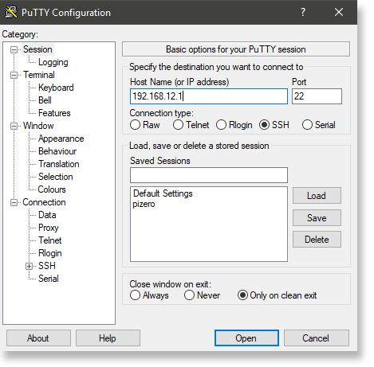

Accessing Your Gateway #
After burning the image into the SD Card, make sure to have the RAK2245 Pi Hat , RAK2013 and the Raspberry Pi stacked and the SD Card inserted. After which, you can now safely power on the gateway. In this document, several ways in accessing the gateway are provided to have different alternatives for you to choose depending on the availability of the requirements needed.
Warning: Before powering the Gateway you should install the LoRa, GPS and Cellular Antennas. Not doing so might damage the boards.
1. Wi-Fi AP Mode #
By default, the LoRa Gateway will work in Wi-Fi AP Mode which means that you can find an SSID named like “Rakwireless_XXXX” on your PC’s Wi-Fi Network List.

Note: Connect to this Wi-Fi SSID by using “rakwireless” as the default password. The default IP address of the LoRa Gateway’s Wi-Fi is
192.168.12.1. Take note of this IP address as this will be needed in connecting via SSH.
2. Via the Ethernet Port on the Raspberry Pi 3B+ #
You can also connect your PC with the LoRa Gateway through an Ethernet Cable via the Raspberry Pi port. By default, the IP Address of the LoRa Gateway’s Ethernet is 192.168.10.10
Log into the LoRa Gateway via SSH #
1. Windows OS #
SSH (Secure Shell) is typically used to log in to a remote machine and execute commands. There are a lot of free and good SSH Clients out there namely Putty, BitVise SSH Client, MobaXterm and many more. Feel free to choose one that fits your needs, you will be using Putty for this guide.

- If you have connected to the LoRa Gateway through Wi-Fi AP Mode, the IP Address is
192.168.12.1 - If you have connected to the LoRa Gateway through Ethernet, the IP Address is
192.168.10.10 - It will then prompt you to enter the username and password. The default username is “pi” and the default password is “raspberry”

2. Mac OS #

-
Open the terminal of Mac OS. Enter root mode by typing the following command:
sudo -i -
Enter
ssh pi@192.168.12.1in the terminal to login to your LoRa Gateway, the default password is “raspberry”. If you connect your PC with the LoRa Gateway through Ethernet Cable, you should enterssh pi@192.168.10.10, the default password is “raspberry”.
3. Linux OS #
If the OS of your PC is Linux, you should do the same as the Mac OS, except the root mode.